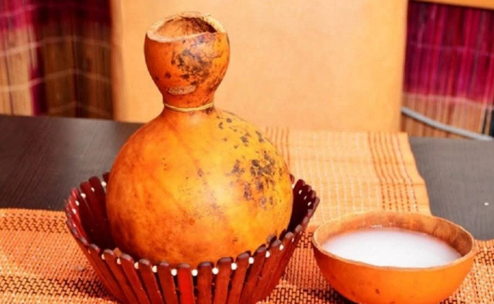

Emu (Palm Wine)
Emu (Palm Wine) is a traditional West African drink tapped from the sap of palm trees, especially the raffia and oil palm. Freshly collected, it has a light, milky appearance and a naturally sweet, slightly tangy taste. As it sits, it begins to ferment, developing a gentle fizz and a mild alcoholic kick — the fresher it is, the sweeter and less alcoholic it tends to be.
Palm wine is more than just a beverage; it carries cultural weight. It’s commonly served at celebrations, weddings, and community gatherings, and it often plays a role in traditional ceremonies. People enjoy it chilled or at room temperature, sometimes alongside hearty meals.
Overall, Emu is valued for its refreshing taste, natural origin, and deep connection to social life and heritage across many Nigerian communities.